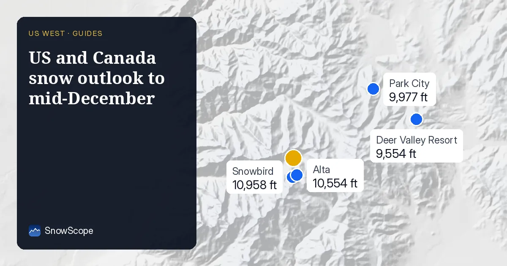
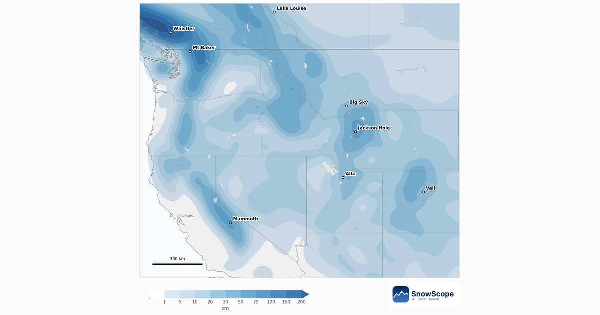
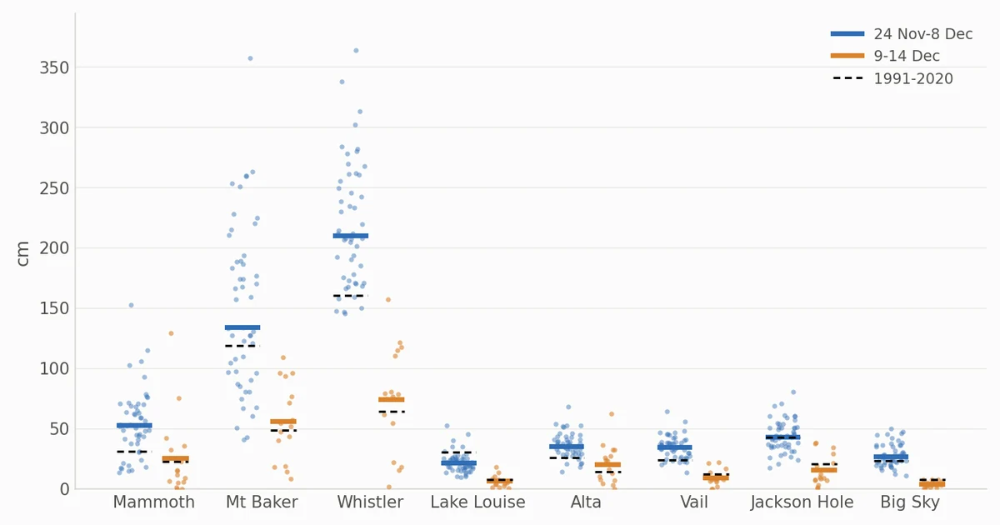
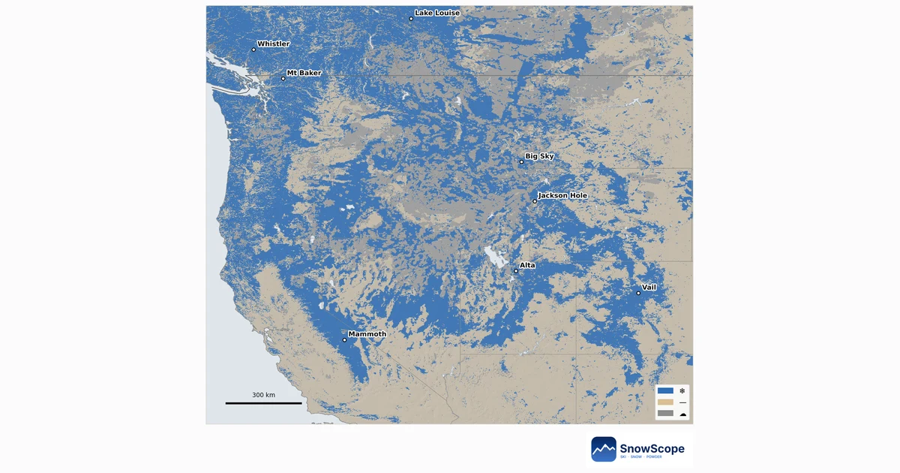
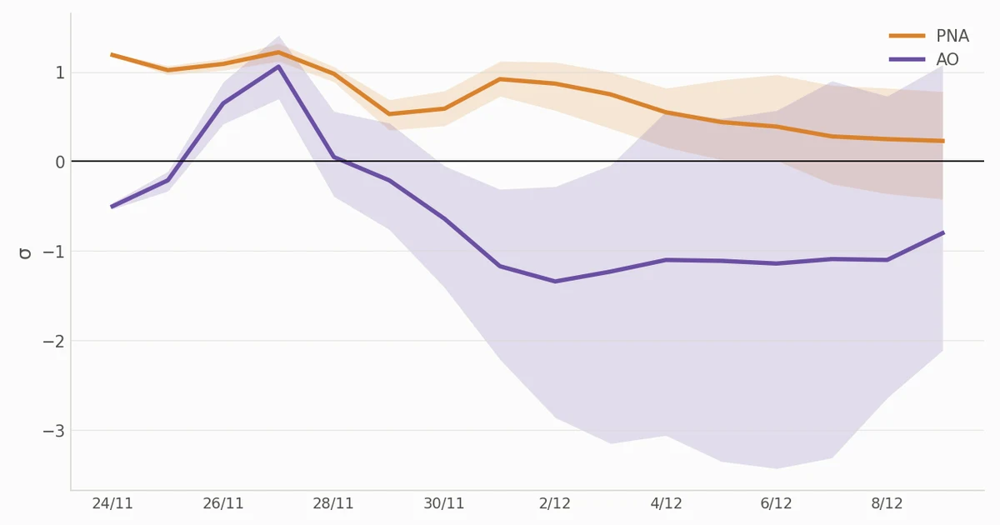

US and Canada snow outlook to mid-December: 88 % chance of an above-normal fortnight in the West (ECMWF, NOAA, NASA, 24 November 2026)
Of the five mountain ranges we follow, the North American West has the best odds for the next two weeks. Averaged over every mountain cell above 1,500 m from the Sierra Nevada to the Canadian Rockies, the 50-member ECMWF ensemble of 24 November gives 22.6 mm of snow water by 8 December against a 1991-2020 normal of 19.3 mm, and 88 % of the members end above that normal. Locally the picture is more mixed: the Coast Mountains get hammered this week, the Sierra Nevada waits for a storm in early December, Utah and Colorado look good, and the Canadian Rockies around Lake Louise stay lean.
See the live snow forecast for Alta in the SnowScope appSnow depth, powder alerts and the 3D map, free.

Snow on the ground today: NASA MODIS
Combining Terra and Aqua and keeping the last clear look of each 500 m pixel between 16 and 23 November, MODIS sees 658,436 km² of snow above 1,500 m in our box from California to Alberta, 53 % of the visible ground, while 15 % stayed under cloud all week.
By height the white share goes from 41 % between 1,500 and 1,750 m to 54 % between 2,000 and 2,250 m, 73 % between 2,500 and 2,750 m and 90 % between 3,000 and 3,250 m. The lowest mostly white band starts at 2,000 m, about 6,600 ft, a typical late-November snow line for the interior West. MODIS reads snow with the NDSI, (green - SWIR) / (green + SWIR) (Hall et al. 2002); in dense conifer forest it misses part of the snow, so low bands are a floor.

24 November to 8 December: resort by resort
Coast Mountains and Cascades: Whistler (grid cell at 1,390 m) has a median of 60 in (153 cm) of fresh snow for 24 to 30 November alone, and 82 in (210 cm) over 15 days against a normal of 63 in (160 cm); 88 % of members beat the normal. Mt Baker: median 53 in (133 cm) against 47 in (119 cm), 64 %, but its cell is low (1,146 m) and only 60 % of the precipitation falls as snow there: the higher slopes do better than the cell, the parking lot may see rain.
Sierra Nevada: Mammoth is dry this week (median 1 in (2 cm)), then the members agree on a storm from 1 to 8 December, median 20 in (50 cm). Over the fortnight 21 in (53 cm) against 12 in (31 cm), 78 % above normal. Atmospheric rivers bring most of the Sierra's big snowfalls, and whether they give snow or rain depends on the air temperature (Guan et al. 2010): here 96 % of the precipitation at the Mammoth cell falls as snow.
Utah and Colorado: Alta median 14 in (35 cm) against 10 in (26 cm), 88 %; Vail 14 in (34 cm) against 9 in (24 cm), 86 %. Northern Rockies: Jackson Hole 17 in (43 cm) against 17 in (43 cm), 50 %; Big Sky 60 %. Canadian Rockies: Lake Louise 8 in (21 cm) against 12 in (30 cm), only 12 %.

The formulas
Each member i gives a snowfall S_i in mm of water. Fresh snow depth is Δh = S · ρw / ρnew; Judson and Doesken (2000) measured mean fresh-snow densities of 72 to 103 kg/m³ at six sites in Colorado and Wyoming, so we use 100 kg/m³: 1 mm of water ≈ 1 cm (0.4 in) of snow, more in cold Rockies powder, less in wet Cascade snow. The probability of an above-normal fortnight is P = (1/N) Σ 1[S_i > normal] with N = 50, where the normal is the 1991-2020 mean of the same calendar days on the same 0.25° grid. Of all mountain cells, 31 % have a chance of 60 % or more and 37 % of 40 % or less: the regional signal is strong, but it is made of very different places.

9 to 14 December: NOAA GEFS
For days 16 to 21 we use the 16 complete members of NOAA's GEFS of 24 November, counting 6-hour precipitation only when the member's snow flag is on (S = Σ P6h · CSNOW). Across the West, 38 % of members beat the normal of those six days, mean 7.7 mm against 8.3 mm. Whistler has 62 %, Alta and Mt Baker 56 %, Mammoth 38 %, Big Sky only 12 %. At three weeks these are tilts of the odds, not forecasts (Vitart 2014; Vitart and Robertson 2018).
PNA and the Arctic Oscillation
The Pacific-North American pattern (Wallace and Gutzler 1981) measures the ridge-trough shape of the flow over North America. NOAA's GEFS forecast keeps it positive, +1.19 today and +0.23 on 9 December, with only 12 % of member-days negative from day 8. A positive PNA usually means a ridge over the West and a trough in the East; its slow decline towards zero fits the ensemble's storms returning to California and Utah in early December.
The Arctic Oscillation (Thompson and Wallace 1998) falls to -1.34 on 2 December, with 77 % of member-days negative. A negative AO lets Arctic air spill south, which matters most east of the Rockies and in the Northeast, and makes snow-to-liquid ratios higher in the interior West.

How far to trust these numbers
Every number is for a 0.25° cell, about 28 km north-south and 20 km east-west here. A cell's mean height can be very different from the resort: the Vail cell is above the base, the Whistler and Mt Baker cells are far below the alpine. We compare each cell with its own 1991-2020 normal so that the ratio cancels most of the height effect. For what is on the ground, snow maps alone are not enough: Durand et al. (2008) showed how merging remote sensing data sets reconstructs snow water in the Sierra Nevada. For the next 5 days, use daily forecasts, SNOTEL and the avalanche centers.

Tips for skiers
- Best odds for powder before 8 December: Whistler and the Coast Mountains now, Utah and Colorado (88 % at Alta) through early December.
- Sierra Nevada: wait for the storm of the first week of December; this week stays dry.
- Lake Louise and the Banff area: a leaner fortnight, early-season terrain only.
- After big Coast Mountain storms, read the Avalanche Canada and NWAC forecasts before going out of bounds.
References and credits
- ECMWF open data: IFS ensemble forecasts (ENS), run of 24 November 2026 00 UTC, 0.25° grid, snowfall and total precipitation (CC BY 4.0) www.ecmwf.int/en/forecasts/datasets/open-data
- Zhou, X. et al. (2022). The development of the NCEP Global Ensemble Forecast System version 12. Weather and Forecasting 37, 1069-1084 doi.org/10.1175/WAF-D-21-0112.1
- NOAA Global Ensemble Forecast System (GEFS) open data on AWS: run of 24 November 2026 00 UTC, 0.5° grid, APCP and CSNOW registry.opendata.aws/noaa-gefs/
- Hersbach, H. et al. (2020). The ERA5 global reanalysis. Quarterly Journal of the Royal Meteorological Society 146, 1999-2049 (monthly means 1991-2020, Copernicus Climate Change Service) doi.org/10.1002/qj.3803
- NOAA Climate Prediction Center: daily NAO, AO, PNA and AAO index forecasts from the GEFS ensemble www.cpc.ncep.noaa.gov/products/precip/CWlink/
- Wallace, J.M. and Gutzler, D.S. (1981). Teleconnections in the geopotential height field during the Northern Hemisphere winter. Monthly Weather Review 109, 784-812 doi.org/10.1175/1520-0493(1981)109<0784:TITGHF>2.0.CO;2
- Thompson, D.W.J. and Wallace, J.M. (1998). The Arctic Oscillation signature in the wintertime geopotential height and temperature fields. Geophysical Research Letters 25, 1297-1300 doi.org/10.1029/98GL00950
- Guan, B., Molotch, N.P., Waliser, D.E., Fetzer, E.J. and Neiman, P.J. (2010). Extreme snowfall events linked to atmospheric rivers and surface air temperature via satellite measurements. Geophysical Research Letters 37, L20401 doi.org/10.1029/2010GL044696
- Durand, M., Molotch, N.P. and Margulis, S.A. (2008). Merging complementary remote sensing datasets in the context of snow water equivalent reconstruction. Remote Sensing of Environment 112, 1212-1225 doi.org/10.1016/j.rse.2007.08.010
- Judson, A. and Doesken, N. (2000). Density of freshly fallen snow in the central Rocky Mountains. Bulletin of the American Meteorological Society 81, 1577-1587 doi.org/10.1175/1520-0477(2000)081<1577:DOFFSI>2.3.CO;2
- Vitart, F. (2014). Evolution of ECMWF sub-seasonal forecast skill scores. Quarterly Journal of the Royal Meteorological Society 140, 1889-1899 doi.org/10.1002/qj.2256
- Vitart, F. and Robertson, A.W. (2018). The sub-seasonal to seasonal prediction project (S2S) and the prediction of extreme events. npj Climate and Atmospheric Science 1, 3 doi.org/10.1038/s41612-018-0013-0
- Riggs, G.A., Hall, D.K. and Román, M.O. (2019). MODIS Snow Products Collection 6.1 User Guide. NASA / NSIDC nsidc.org/sites/default/files/c61_modis_snow_user_guide.pdf
- Hall, D.K., Riggs, G.A., Salomonson, V.V., DiGirolamo, N.E. and Bayr, K.J. (2002). MODIS snow-cover products. Remote Sensing of Environment 83, 181-194 doi.org/10.1016/S0034-4257(02)00095-0
- NASA Global Imagery Browse Services (GIBS): MODIS_Terra_NDSI_Snow_Cover and MODIS_Aqua_NDSI_Snow_Cover, 16-23 November 2026 www.earthdata.nasa.gov/engage/open-data-services-software/earthdata-developer-portal/gibs-api
- Copernicus DEM GLO-90 (European Space Agency, Copernicus programme) doi.org/10.5270/ESA-c5d3d65
About these numbers
Snowfall: ECMWF ensemble (50 members, 0.25°) to day 15, NOAA GEFS (16 members, 0.5°) for days 16-21, compared with the 1991-2020 normal of the same calendar days. Snow on the ground: NASA MODIS, last clear view 16-23 November. Mountain cells above 1,500 m.
Cite this report
For research, teaching or the press: the numbers and charts are free to reuse under CC BY 4.0 with this citation.
SnowScope (2026), US and Canada snow outlook to mid-December: 88 % chance of an above-normal fortnight in the West (ECMWF, NOAA, NASA, 24 November 2026), https://snowscope.app/blog/en/2026/11/us-canada-snow-outlook-next-3-weeks-ecmwf-noaa-24-november-2026.html, accessed 2026-11-24
SnowScope (Atlas Labs). (2026, November 24). US and Canada snow outlook to mid-December: 88 % chance of an above-normal fortnight in the West (ECMWF, NOAA, NASA, 24 November 2026). SnowScope snow reports. https://snowscope.app/blog/en/2026/11/us-canada-snow-outlook-next-3-weeks-ecmwf-noaa-24-november-2026.html
BibTeX
@misc{snowscope2026uscanadasnowoutlooknext3,
author = {{SnowScope (Atlas Labs)}},
title = {US and Canada snow outlook to mid-December: 88 % chance of an above-normal fortnight in the West (ECMWF, NOAA, NASA, 24 November 2026)},
year = {2026},
month = nov,
howpublished = {\url{https://snowscope.app/blog/en/2026/11/us-canada-snow-outlook-next-3-weeks-ecmwf-noaa-24-november-2026.html}},
note = {Published 2026-11-25 08:19 UTC; accessed 2026-11-24}
}· CC BY 4.0 · Methods, data and tools →
Follow Alta
Free: a message when fresh snow is coming, and the forecast every morning.
More snow reports

Mt Baker sits at 28 cm on upper slopes, right where November typically sees snow at this height. Fresh powder is arriving this week, especially Thursday.

Mt. Hood Meadows has 51 cm on upper slopes, well below the 73 cm average. Up to 66 cm new snow forecast by November 27 at Crystal Mountain.

The forecast shows up to 199 cm across the US West in the next two weeks, with the heaviest snow arriving in week one. Data from 21 November 2026.